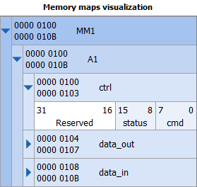

Memory map editor can be used to edit the details of a memory map Memory map is defined for a slave interface. It defines what the masters can access in this component. Memory map is hiearchical.
Address block specifies a single contiguous block of
memory, either a set of registers or a block of memory. (Moreover,
IP-XACT allows defining bank or subspaceMap, but
they are not yet supportted by Kactus v2.1, March
2013). Registers are inside address block and each
register can have bit fields.
Address block has 5
mandatory parameters: usage, name, base address, range, and width.
Usage column is used to specify the usage of the address block. The possible values are:
Address block has a name and textual
description.
Base address specifies the
starting address for the address block. It is expressed as
addressing units as defined in the containing memory map,
e.g. 8b or 32b.
Range is also expressed as
addressing units and specifies size of the block. Be careful
that range is set greater or equal to the sum of all register
sizes.
Width is the data width in bits of a row in
the address block. It sets the maximum allowed size of a single
transfer and also defines the maximum size of a single
register. Register can be smaller but not wider.
Access column is used to specify the accessibility of the block. The possible values are:
Volatile=true indicates that the stored value may change without master's write operation. For example, the timer value gets updated automatically and master must always issue a read to get the latest value.
EXAMPLE. A simple IP could have 1 memory map, 1 address block
inside it, and three 32-bit registers: ctrl, data_in, and
data_out. Ctrl allows both read and write accesses, data_in is
write-only, and data_out is read-only. The lower part of ctrl
register is divided into two 8-bit fields and designer can
describe how they are used. The upper bits are not used. Data
registers do not have field definitions.
Number of Addresss unit bits(AUB) os the memory map is
set to 8 bits. There are 3 registers with identical size (32b),
Hence, ranger = 12 = 3 * 32/AU = 3 * 32/8 = 3 * 4. Let's assume
base addr=0x100. Since address block has 12 Bytes in total, it
reserves the (byte) addresses 0x100-0x10B. It is good to set the
width of the address block 32 b so that full register can be
accessed at once. Smaller accesses (e.g. 1 byte at a time) are
also allowed. Memory maps visualization is shown on the
right. User can expand and minimize parts of it by clicking the
plus (+) and minus (-) signs.
